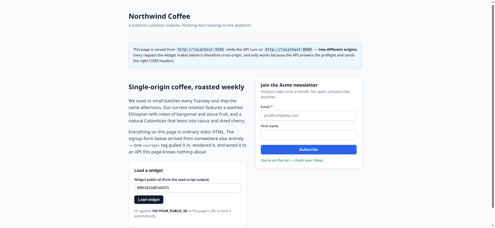

Lead-Capture Platform
Problem: a form endpoint open to the whole internet, where nothing can be trusted.
Shipped: an embeddable widget and API with validation, rate limits, spam filtering, geo fallback and a transactional outbox.
79 tests · 23/23 live probes pass
Read the case